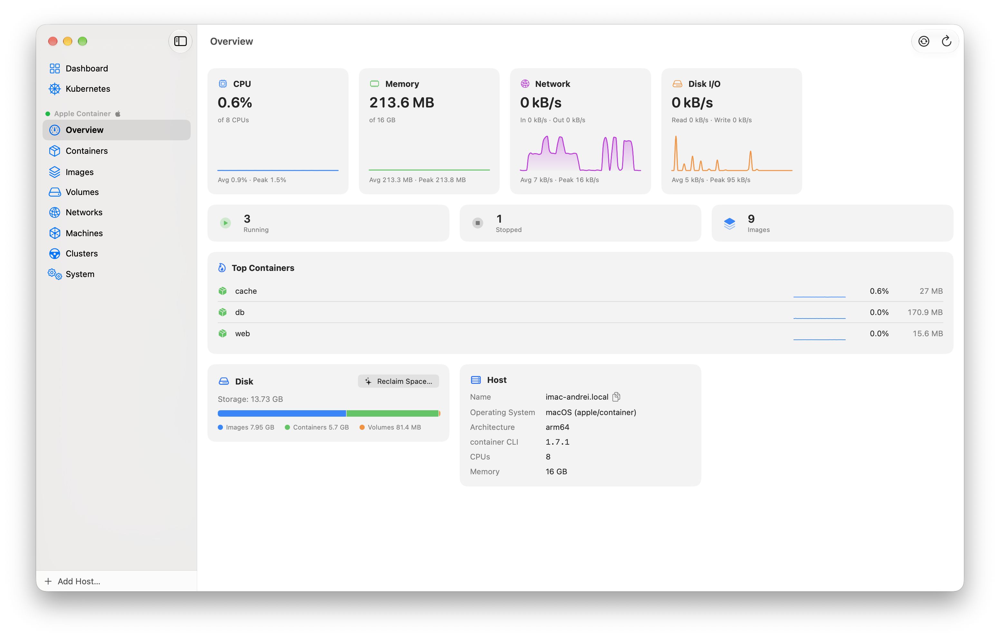

Die Mac-App für Apple container und Docker
Gantry ist eine kostenlose Open-Source-App für den Mac, für Apples container-Tool und für Docker, lokal und über SSH. Führe Container, Kubernetes-Cluster, Maschinen und Compose-Projekte auf apple/container in einem Fenster aus, neben deinen Docker-Hosts. Eine kostenlose Alternative zu Docker Desktop und OrbStack für den Mac.
Gantry 0.29.0 · macOS 26+ · Apple Silicon & Intel · MIT-Lizenz · 28 Sprachen · MCP-Server inklusive

Vom Befehl zum Steuerelement
Apples container-Tool und Docker sind Befehlszeilentools. Für jeden Befehl in dieser Tabelle hat Gantry ein Steuerelement.
- container
- docker
- docker compose
- kubectl
| Befehl | In Gantry |
|---|---|
container run, container create | Fenster „Neuer Container“ und Schnellstart: Image, Name, Befehl, Ports, Umgebung, Volumes, DNS-Domain, eigener Kernel und Boot-Argumente; Befehl einsetzen… liest eine docker run- oder container run-Zeile |
container start, stop, kill, delete, prune | Symbolleiste, Kontextmenü und das Menüleisten-Panel |
container logs | Tab „Logs“: Live-Verfolgung, Regex-Suche, Level-Filter, ANSI-Farben; Logs exportieren… sichert die sichtbaren Zeilen |
container stats | Tab „Statistiken“, Sparklines im Flotten-Dashboard und die Tabelle „Ressourcennutzung“ |
container exec | Tab „Terminal“ (interaktive Shell) und Tab „Prozesse“ |
container inspect | Tabs „Übersicht“ und „Untersuchen“; Als Compose exportieren… macht aus der Konfiguration eine Compose-Datei |
container copy | Tab „Dateien“: herunterladen und in den Finder ziehen (der Container muss gestartet sein) |
container image pull, tag, delete, prune, inspect | Images: pullen mit Fortschritt, taggen, entfernen, bereinigen, untersuchen; Auf Schwachstellen prüfen… mit Trivy oder Grype |
container build | Baut die build:-Dienste einer Compose-Datei; der Bereich Builds listet die Builds, die Gantry gestartet hat |
container machine create, run, stop, delete, set-default, set, inspect | Maschinen: erstellen, starten, stoppen, löschen, Standardmaschine, CPUs und Arbeitsspeicher, Shell, untersuchen, In VS Code öffnen |
container cluster create, list, delete, write-config, load-image | Cluster: Kubernetes-Cluster, Worker-Größen und gemeinsamer Image-Speicher (1.7), Nodes, Kubeconfig, Ressourcen durchsuchen, In Cluster laden (1.5 und 1.6) |
Kein compose-Befehl | Compose-Runner: eine docker-compose.yml aus dem Finder, über das Menü „Ablage“ oder per Drag-and-drop starten |
Container
Erstelle, starte, öffne und ändere Container auf jedem Host.
- container run
- docker exec -it
- docker cp
- docker port
- Einen
docker runeinsetzen - Setze einen
docker run-,podman run- odercontainer run-Befehl ein, und Gantry füllt das Formular „Neuer Container“ aus, mit einer Liste der Flags, die es nicht verwenden kann. Kopiere jeden Container zurück als Befehl oder sichere ihn als Rezept. So funktioniert es - Integriertes Exec-Terminal
- Vollständige Terminalemulation in jedem laufenden Container, lokal oder remote – mit Farbthemen (System, Solarized, Dracula, Nord).
- Dateibrowser mit Drag & Drop
- Durchsuche das Dateisystem eines Containers, bewege Dateien hinein und heraus und lege ganze Ordner direkt aus dem Finder ab – auf Docker- und apple/container-Hosts gleichermaßen.
- Im Browser öffnen & weiterleiten
- Ein Klick öffnet einen veröffentlichten Port. SSH-Ports werden automatisch zu
localhostgetunnelt – und ist der Port belegt, wählt Gantry einen freien, den du ändern kannst. - Ins Internet freigeben
- Ein Klick gibt einen veröffentlichten Port über einen Cloudflare Tunnel frei. Gantry installiert
cloudflaredfür dich und stellt dann einen Quick Tunnel (kein Konto, eine*.trycloudflare.com-URL) oder einen Named Tunnel auf deiner eigenen Domain bereit – ideal für eine Dev-Vorschau, einen Webhook oder damit ein KI-Agent einen Container auf deinem Mac erreicht. - Schlüsselbund-Geheimnisse in der Umgebung
- Bewahre Passwörter und Tokens im Schlüsselbund von macOS auf (Einstellungen → Geheimnisse) und verwende sie als Umgebungsvariablen in „Neuer Container“ und „Schnellstart“. Das Formular zeigt
keychain:NAME, nie den Wert, und Gantry liest den Wert erst, wenn es den Container erstellt. Compose-Export, Rezepte und „Als Befehl kopieren“ schreiben den Namen, nicht den Wert. - Viele auf einmal bearbeiten
- Wähle mehrere Container, Images, Volumes oder Netzwerke aus und starte, stoppe, starte neu oder entferne sie in einem Schritt, mit Fortschrittsanzeige und einem Ergebnis für jedes Objekt.
- Statistiken in Echtzeit
- CPU, Arbeitsspeicher, Netzwerk- & Festplatten-I/O live als Diagramm, gemessen im Sekundentakt.
- Container auf einer externen Festplatte
- Verschiebe alle apple/container-Daten auf eine externe Festplatte, lege Volumes auf einer Festplatte deiner Wahl ab und erhalte eine klare Warnung, wenn diese Festplatte nicht angeschlossen ist. Zur Anleitung

Images und Builds
Pulle, baue, prüfe und entferne Images.
- docker build
- docker pull
- trivy image
- docker system prune
- Images bauen & pullen
- Zieh ein Dockerfile auf das Fenster, um mit Live-Log zu bauen, oder pulle per Referenz mit Fortschritt pro Layer. Taggen, bereinigen und die Layer-Historie lesen. Ein Badge markiert Images, die für eine andere CPU-Architektur als die des Hosts gebaut wurden.
- Build-Verlauf
- Jeder Host hat einen Bereich Builds: die Builds mit ihren Schritten, Cache-Treffern und ihrem Log. Gantry behält die Builds, die es startet, mit den Namen der Build-Argumente, aber ohne ihre Werte. Auf Docker-Hosts liest es auch
docker buildx history(buildx 0.23.0 oder neuer). apple/container führt keinen Build-Verlauf, dort siehst du also die Builds, die Gantry gestartet hat. - Images mit Trivy oder Grype prüfen
- Wähle Auf Schwachstellen prüfen… bei einem Image. Gantry führt das Trivy (0.50.0 oder neuer) oder Grype (0.74.0 oder neuer) aus, das du installiert hast, zum Beispiel mit Homebrew, und gruppiert die Funde von Kritisch bis Unbekannt. SBOM exportieren schreibt CycloneDX oder, mit Trivy, SPDX. Das funktioniert auf apple/container, lokalem Docker und Docker über SSH; dort prüft Gantry die Registry-Kopie eines getaggten Images.
- Private Registrys
- Pulls nutzen das
docker login, das du schon ausgeführt hast – Gantry holt die Anmeldedaten aus~/.docker/config.json, Credential-Helper und dem Schlüsselbund, beim Erstellen, beim Schnellstart und bei Compose gleichermaßen. - Speicherplatz freigeben
- Ein Bereich zeigt, was Platz belegt – verwaiste Images, gestoppte Container, ungenutzte Volumes, Build-Cache – mit Größen, und bereinigt einzeln oder alles auf einmal. Auf apple/container führt er außerdem „Festplatte trimmen“ aus.
Compose
Führe eine docker-compose.yml auf Docker oder auf apple/container aus und erstelle eine aus laufenden Containern.
- docker compose up -d
- docker compose down
- docker compose logs -f
- Compose auf jedem Host
- Container werden nach ihrem Compose-Projekt gruppiert. Starte eine Compose-Datei auf jedem Host – lokales Docker, SSH oder apple/container – mit integriertem YAML-Editor; der Runner passt sich an die jeweilige Engine an.
- Als Compose exportieren
- Wähle Als Compose exportieren… bei einem oder mehreren Containern und du erhältst eine
docker-compose.ymlmit Ports, Mounts, Netzwerken, Neustartrichtlinie, Integritätsprüfung, Limits und mehr. Werte, die nach Geheimnissen aussehen, werden zu${NAME}, außer du nimmst sie auf. Auf apple/container-Hosts warnt Gantry vor den Flags, die Compose nicht abbilden kann. So funktioniert es
Kubernetes
Durchsuche jeden kubeconfig-Kontext oder erstelle einen Cluster mit apple/container.
- kubectl get pods -A
- kubectl logs -f
- kubectl port-forward
- container cluster
- Kubernetes-Browser
- Durchsuche Pods, Deployments, StatefulSets, DaemonSets, Services, Ingresses, ConfigMaps, Secrets, Nodes und Ereignisse in jedem Kubeconfig-Kontext. Verfolge Pod-Logs, öffne eine Shell, leite einen Port weiter, skaliere, starte ein Rollout neu und wende YAML an. Gantry spricht selbst mit der Kubernetes-API, ein mit
container cluster createerstellter Cluster lässt sich also ohne weitere Installation durchsuchen: keinkubectl. - Kubernetes-Cluster
- Erstelle mit
container clustereinen Kubernetes-Cluster: Lege die Größe der Control Plane und der Worker getrennt fest, wähle das CNI und sieh die Nodes, die Kubernetes-Version und den Kubeconfig-Kontext. Cluster-Nodes sind gegen versehentliches Stoppen und Löschen gesperrt. Mehr erfahren

Hosts und Flotte
Dieser Mac, Docker-Hosts über SSH und apple/container auf einem Dashboard.
- docker -H ssh://user@host
- docker context use
- docker stats
- Ein Dashboard für jeden Host
- Lokaler Daemon, SSH-Flotte und apple/container auf einem Bildschirm – Live-Sparklines für CPU und Arbeitsspeicher, Aufschlüsselung nach Container-Status und Probleme, die dich direkt zum Verursacher führen.
- Remote-Hosts über SSH
- Tunnelt genau wie
docker -H ssh://überdial-stdio– ProxyJump-Bastion-Hosts, Authentifizierung mit mehreren Schlüsseln, automatische Neuverbindung. Auf dem Server ist nichts zu installieren, Secrets liegen im Schlüsselbund. Import mit einem Klick aus~/.ssh/configunddocker context ls. - Ressourcennutzung für alle Hosts
- Eine sortierbare Tabelle der laufenden Container auf jedem verbundenen Host: Host, Name, Image, CPU, Arbeitsspeicher, Netzwerk-I/O, Festplatten-I/O und Laufzeit. Filtere nach Name, Image oder Host oder zeige nur einen Host. Doppelklicke auf eine Zeile, um den Container zu öffnen. Die Tabelle nutzt die Messwerte, die Gantry ohnehin alle 5 Sekunden erfasst, und öffnet daher keine neuen Statistik-Streams. Öffne sie in der Seitenleiste, mit ⌘K oder mit
gantry://open/usage.



Logs und Ausfälle
Lies, durchsuche und exportiere Logs. Finde die Ursache, wenn ein Container ausfällt.
- docker logs -f
- container logs
- docker events
- Live-Logs
- Live-Verfolgung, ⌘F-Suche mit Regex oder als Klartext, ein Level-Filter (Error→Trace), ANSI-Farben, ein Puffer für 50.000 Zeilen – und zusammengeführte Stack-Logs für ein ganzes Compose-Projekt.
- Logs exportieren
- Logs exportieren… (⇧⌘E) sichert die Zeilen, die du siehst, mit Level-Filter, Suche und Zeitraum als
.log- oder.txt-Datei. Sichtbare Zeilen kopieren kopiert sie. Auf Docker-Hosts kannst du Zeitstempel hinzufügen und nur die letzten 5 Minuten bis hin zum letzten Tag anzeigen. - Mitteilungen bei Fehlern
- Eine native Mitteilung, wenn ein Container auf einem beliebigen Host abstürzt, keinen Arbeitsspeicher mehr hat oder fehlerhaft wird. Ein Klick führt direkt zum Container – Stopps, die du selbst auslöst, bleiben stumm.
- Fehler erklären mit Apple Intelligence
- Wähle Fehler erklären… bei einem abgestürzten Container oder einem fehlgeschlagenen Vorgang. Gantry sendet aktuelle Logs und Details ohne Umgebungswerte und ohne Text, der nach Geheimnissen aussieht, an das Modell auf dem Gerät und zeigt die wahrscheinliche Ursache, die Belege und die nächsten Schritte. Lange Logs können an Private Cloud Compute gehen (macOS 27). Das Fenster zeigt genau, was gesendet wurde.
- Bildschirmfotos in „Fehler erklären“
- Lege in „Fehler erklären“ bis zu 3 Bilder ab, setze sie ein oder füge sie hinzu, zum Beispiel ein Bildschirmfoto einer Fehlerseite. Die Bilder bleiben auf diesem Mac: Nur das Modell auf dem Gerät liest sie (macOS 27), nie Private Cloud Compute.

macOS
Die Menüleiste, Mitteilungen, Spotlight, Kurzbefehle und die Tastatur.
- ⌘K
- ⌥⌘P
- ⇧⌘E
- Teil von macOS
- Mitteilungen mit „Neu starten“, „Logs anzeigen“ und „Als Prompt kopieren“. Spotlight findet Container, Compose-Projekte und Hosts. Aktionen für Siri und Kurzbefehle, ein Widget für den Flottenzustand, Steuerelemente im Kontrollzentrum für die apple/container-Dienste oder einen Lieblingscontainer und
gantry://-Links für Skripte. - Fortschritt in der Menüleiste
- Das Menüleisten-Panel zeigt jeden laufenden Pull, Build und jede laufende Compose-Operation mit einem Fortschrittsbalken, den fertigen Layern oder Diensten, den Bytes, der Zeit und der Taste Abbrechen. Das Menüleistensymbol zeigt, wie viele Operationen laufen. Jedes Compose-Projekt erhält Images pullen und Compose Down; Compose Down behält Volumes und Images.
- Befehlspalette
- Drücke ⌘K und tippe los. Eine Suche umfasst Container, Compose-Projekte, Images, Volumes, Netzwerke, Maschinen, Cluster und Hosts, mit Aktionen wie „Starten“, „Logs anzeigen“ und „Shell öffnen“.
- Touch ID für destruktive Aktionen
- Auf Wunsch fragt Gantry nach Touch ID – oder deinem Anmeldepasswort –, bevor ein Container entfernt oder ein Host gelöscht wird. Secrets liegen ohnehin im Schlüsselbund.
- Terminal-Themes
- Gib der eingebetteten Shell das Theme System, Solarized Dark, Dracula oder Nord – mit kompletter Vordergrund-, Hintergrund- und 16-Farben-ANSI-Palette, live angewendet.

Die native macOS-GUI für Apple container
Apples container-Tool führt Linux-Container als leichtgewichtige VMs auf Apple Silicon aus, gibt es aber nur als Befehlszeilenwerkzeug. Gantry ist die Desktop-App dazu: Was Docker Desktop für Docker ist, ist Gantry für container. Es unterstützt jede container-CLI von 1.0 bis zur empfohlenen 1.7.1 und schaltet jede Funktion erst ein, wenn deine installierte CLI sie unterstützt.
- container system start
- container machine
- container builder start
- container registry login
- Container, Logs, Statistiken und Exec
- Erstellen, starten, stoppen, zwangsweise beenden und bereinigen; Live-Logs, Statistiken, ein Exec-Terminal,
topund tar-Export – in derselben Oberfläche wie deine Docker-Hosts. - Kubernetes-Cluster
- Erstelle mit
container clustereinen Kubernetes-Cluster: Lege die Größe der Control Plane und der Worker getrennt fest, wähle das CNI und sieh die Nodes, die Kubernetes-Version und den Kubeconfig-Kontext. Cluster-Nodes sind gegen versehentliches Stoppen und Löschen gesperrt. Mehr erfahren - Lokale Images im Cluster
- Schalte in CLI 1.7 Lokale Images verwenden (
--shared-image-store) ein, dann laufen in Pods die Images, die du baust oder pullst, ganz ohne Registry. In CLI 1.5 und 1.6 klickst du mit der rechten Maustaste auf ein Image und wählst In Cluster laden. - Klare Hinweise bei einer defekten Installation
- Wenn die Cluster-Dienste nicht antworten, sagt dir Gantry, warum. Bei einem Homebrew-Build ohne Cluster-Dienste erscheint ein Link zum signierten Installationsprogramm, in allen anderen Fällen die Taste Dienste neu starten.
- Container-Maschinen in VS Code
- Erstelle, starte und stoppe Linux-Umgebungen mit
container machine, lege CPUs und Arbeitsspeicher fest, öffne eine Shell oder öffne die Maschine in VS Code über Remote-SSH. - Verschachtelte Virtualisierung und eigene Kernel
- Starte eine Maschine mit verschachtelter Virtualisierung (M3 oder neuer) oder deinem eigenen Kernel. Starte Container mit einem eigenen Kernel und zusätzlichen Boot-Argumenten.
- Compose für Apple container
- apple/container hat kein
compose. Gantry führt deinedocker-compose.ymlaus: Es baut, erstellt Netzwerk und Volumes und startet die Dienste in der Reihenfolge vondepends_on. Dienstnamen werden über Netzwerk-DNS-Aliasse aufgelöst. - Netzwerk-DNS-Aliasse
- Container-Aliasse, Subtree-Aliasse wie
.gatewayund Kurznamen, sobald eine Standard-DNS-Domain gesetzt ist. Jeder Container bekommt eine routbare IP und einen Hostnamen nach dem Mustername.domain. - Image-Builder verwalten
- Sieh Status, Image, CPUs, Arbeitsspeicher und IP des Builders. Starte ihn mit Optionen für CPU, Arbeitsspeicher und DNS, stoppe oder lösche ihn. Ist das Builder-Image veraltet, bietet Gantry an, ihn neu zu erstellen.
- Registry-Anmeldungen
- Anmeldungen von
container registryauflisten, hinzufügen und entfernen. Das Passwort geht nur über stdin an die CLI, und Gantry speichert keine Kopie. - Kernel-Installation
- Installiere den empfohlenen Kernel, eine Kernel-Datei oder ein tar-Archiv, mit Live-Fortschritt. Gantry warnt dich, wenn kein Standardkernel installiert ist.
- Dienste und Dienst-Logs
- Starte, stoppe und starte die
container-Dienste neu, vergleiche Client- und Serverversion und streame Dienst-Logs, gefiltert nach Level, Dienst und Text. - Editor für Systemeigenschaften
- Bearbeite die
container-Systemeigenschaften inconfig.toml. Gantry markiert Änderungen, die einen Neustart brauchen, und startet die Dienste für dich neu. In CLI 1.7 bearbeitet es auch die Standardwerte unter[container.dns]: Nameserver, Suchdomains und Optionen. - Commit und Festplatte trimmen
- Committe einen Container als Image (
container commit) und gib mit Festplatte trimmen (container clean) Speicherplatz frei – auch im Bereich „Speicherplatz freigeben“. - Dateibrowser: Upload und Download
- Durchsuche die Dateien eines Containers, lade sie herunter oder ziehe sie in den Finder (
container copy) und lege Dateien oder ganze Ordner hinein. - Schnellstart und Finder
- Image wählen, Ordner freigeben, Ports zuordnen, Domain festlegen – und starten. Klicke im Finder mit der rechten Maustaste auf eine Compose-Datei und öffne sie mit Gantry.
- Labels, die
=enthalten - Die
container-CLI lehnt Label-Werte mit=ab. Gantry codiert sie beim Erstellen und decodiert sie beim Lesen, sodass ein Wert wiea=berhalten bleibt. - Eine Flotte, zwei Runtimes
- apple/container-Hosts stehen neben deinen lokalen Docker- und SSH-Hosts auf einem Dashboard, mit denselben Sparklines, Zustandsanzeigen und Ausfall-Mitteilungen.
- MCP-Tools für Agenten
- Der mitgelieferte MCP-Server gibt Agenten denselben Zugriff: Container, Maschinen, Cluster und die
apple_*-Systemtools für Dienste, Builder, Registrys, Eigenschaften, Logs und Kernel.
Agenten
Ein mitgelieferter MCP-Server und App Intents machen jeden Host – auch SSH-Hosts – für Claude, Kurzbefehle, Siri und Skripte zugänglich, mit demselben Zugriff wie die GUI: Container erstellen und verwalten, Images bauen und pullen, Volumes und Netzwerke, Compose Up, apple/container-Maschinen und Kubernetes-Cluster, die apple_*-Systemtools für Dienste, Builder, Registrys und Kernel – bis hin zur Freigabe eines Ports über einen Cloudflare Tunnel.
- claude mcp add gantry
$ claude mcp add gantry -- \
/Applications/Gantry.app/Contents/Resources/gantry-mcp
✓ MCP-Server hinzugefügt gantry
- Als Prompt kopieren
- Drück ⌥⌘P bei einem beliebigen Container, und Gantry legt einen fertigen Debugging-Prompt in deine Zwischenablage – den Host und wie er erreichbar ist, die MCP-
host_idund die Tools, den vollständigen Zustand des Containers und eine zum Symptom passende Aufgabe. - MCP-Tools für Agenten
- Der mitgelieferte MCP-Server gibt Agenten denselben Zugriff: Container, Maschinen, Cluster und die
apple_*-Systemtools für Dienste, Builder, Registrys, Eigenschaften, Logs und Kernel.
Releases
- 0.29.0 · 0.28.0Die ganze Flotte in einer Tabelle und sicherere ImagesGantry 0.28.0 und 0.29.0 bringen eine Aktivitätstabelle für alle Hosts, einen Build-Verlauf, Image-Prüfungen mit Trivy oder Grype, Schlüsselbund-Geheimnisse für die Container-Umgebung und einen Export nach Compose. Du kannst Logs mit deinem Filter exportieren, „Fehler erklären“ ein Bildschirmfoto geben und Pulls, Builds und Compose-Läufe in der Menüleiste verfolgen.
- 0.27.0Kubernetes, Apple Intelligence und der Rest von macOSGantry 0.27.0 bringt einen Kubernetes-Browser, erklärt ausgefallene Container mit Apple Intelligence und arbeitet mit Spotlight, Siri, Widgets und dem Kontrollzentrum zusammen. Es unterstützt apple/container 1.7.1 und hat ein neues Design nach Apples Human Interface Guidelines.
Aufbau der App
Gantry kommuniziert mit der Docker Engine API und mit Apples container-CLI. Die App führt keinen eigenen Dienst aus.
- 100 % natives SwiftUI
- Natives SwiftUI, kein Electron. Die App verwendet die Steuerelemente, die Schrift und die Fenster von macOS.
- Swift 6
- Moderne, nebenläufigkeitssichere Codebasis auf der neuesten Toolchain.
- Direkte Engine API
- Docker über den Unix-Socket, keine Docker-CLI nötig. apple/container über seine eigene
container-CLI. - Automatische Updates
- Ein EdDSA-signierter Sparkle-Appcast hält dich aktuell, ohne zu stören.
Installation
Lade die App herunter oder installiere sie mit Homebrew. Du brauchst kein Konto.
- brew install --cask getgantry/tap/gantry
- InstallierenFühre den Homebrew-Cask aus oder lade die
.zipunter Releases herunter und zieheGantry.appin den Ordner „Programme“. - Erster StartNoch nicht notarisiert – Rechtsklick & „Öffnen“, oder entferne die Quarantäne mit
xattr -dr com.apple.quarantine /Applications/Gantry.app - Host hinzufügenLokales Docker erscheint von selbst. Für Apple container fügst du einen Apple Container-Host hinzu; Gantry bietet an, die
container-CLI einzurichten. Agenten:claude mcp add gantry.
Fragen
Was ist die beste GUI für Apple container?
Gantry ist eine kostenlose, quelloffene native macOS-GUI für Apples container-Tool (apple/container). Sie deckt den Lebenszyklus von Containern, Logs, Statistiken und ein Exec-Terminal ab, dazu die Teile der CLI, die andere GUIs nicht erreichen: Kubernetes-Cluster (container cluster), container-Maschinen, den Image-Builder, Registry-Anmeldungen, Kernel, Dienst-Logs und Systemeigenschaften. Sie unterstützt CLI 1.0 bis 1.7.1 und schaltet jede Funktion erst ein, wenn deine CLI sie unterstützt. Siehe den apple/container-Leitfaden.
Was ist Apple container (apple/container)?
apple/container ist Apples Open-Source-Tool, mit dem Linux-Container auf dem Mac laufen. Jeder Container läuft in einer eigenen leichtgewichtigen virtuellen Maschine auf Basis von Apples Virtualization-Framework. Es erfordert einen Mac mit Apple Silicon und kommt als Befehlszeilentool namens container, ohne Desktop-App. Gantry liefert diese Desktop-App.
Unterstützt Gantry container cluster und Kubernetes?
Ja. Auf einem apple/container-Host erstellt und löscht Gantry Kubernetes-Cluster mit container cluster (CLI 1.6.1 und 1.7; CLI 1.5.0 bis 1.6.0 verwenden container k8s). Du wählst den Namen, die Worker, CPUs und Arbeitsspeicher der Control Plane und der Worker (1.7), das Node-Image, das CNI und ob die Nodes deine lokalen Images verwenden (1.7). Gantry zeigt die Nodes, schreibt die Kubeconfig und öffnet den Cluster im Kubernetes-Browser. Siehe Kubernetes auf apple/container.
Kann ich docker compose mit Apple container nutzen?
Ja. apple/container hat keinen compose-Befehl, deshalb übernimmt Gantry die Orchestrierung über die container-CLI: Es baut build:-Dienste, erstellt das Projektnetzwerk und benannte Volumes und startet jeden Dienst in der Reihenfolge von depends_on mit den Standard-Labels von Compose. Dienstnamen werden über Netzwerk-DNS-Aliasse aufgelöst. Öffne eine docker-compose.yml aus dem Finder, über das Menü „Ablage“ oder indem du sie auf das Fenster ziehst.
Wie öffne ich eine Container-Maschine in VS Code?
Starte die Maschine in Gantry und klicke auf In VS Code öffnen. Gantry öffnet die Maschine in VS Code über Remote-SSH, wie in Apples Beispiel container-machine-vscode. Im Image der Maschine muss sshd laufen, und VS Code mit der Erweiterung Remote-SSH muss installiert sein.
Welche apple/container-Versionen unterstützt Gantry?
Gantry braucht die container-CLI 1.0 oder neuer und empfiehlt 1.7.1. Es liest die installierte Version und zeigt nur die Funktionen, die diese Version unterstützt, zum Beispiel Worker-Größen und den gemeinsamen Image-Speicher (1.7), Commit (1.6) und „Festplatte trimmen“ (1.4). Fehlt die CLI oder ist sie zu alt, bietet Gantry eine geführte Einrichtung an.
Kann Gantry einen Kubernetes-Cluster durchsuchen?
Ja. Der Bereich Kubernetes listet für jeden Kubeconfig-Kontext Pods, Deployments, StatefulSets, DaemonSets, Services, Ingresses, ConfigMaps, Secrets, Nodes und Ereignisse und bietet Pod-Logs, eine Pod-Shell, Portweiterleitungen, Skalieren, Rollout-Neustart, Löschen und „YAML anwenden“. Gantry spricht selbst mit der Kubernetes-API, du brauchst also kein kubectl. Siehe Kubernetes auf dem Mac ausführen.
Was sendet „Fehler erklären“ an Apple Intelligence?
Aktuelle Logs und die Details des Containers, ohne Umgebungswerte und ohne Text, der nach Geheimnissen aussieht. Kleine Anfragen laufen auf dem Modell auf dem Gerät. Ist die Einstellung für lange Logs aktiv (macOS 27), gehen lange Logs an Private Cloud Compute. Das Fenster zeigt, was gesendet wurde. Ein vorgeschlagener Befehl öffnet sich im Terminal, läuft aber erst, wenn du die Return-Taste drückst. Ohne Apple Intelligence bietet Gantry einen Prompt an, den du in einen anderen KI-Assistenten kopieren kannst.
Kann ich einen docker run-Befehl in Gantry einsetzen?
Ja. Wähle im Fenster „Neuer Container“ die Option Befehl einsetzen…. Gantry liest docker run, docker create, podman run und container run, füllt das Formular aus und listet jedes Flag, das es nicht verwenden kann, mit dem Grund. Siehe Container aus einem docker run-Befehl erstellen.
Kann Gantry Builder, Registrys und Kernel von apple/container verwalten?
Ja. Der Bereich „System“ eines apple/container-Hosts startet, stoppt und löscht den Image-Builder mit Optionen für CPU, Arbeitsspeicher und DNS; listet Registry-Anmeldungen auf, fügt sie hinzu und entfernt sie (das Passwort geht nur über stdin an die CLI); installiert den empfohlenen Kernel, eine Kernel-Datei oder ein tar-Archiv; streamt Dienst-Logs und bearbeitet die Systemeigenschaften in config.toml.
Ist Gantry eine Alternative zu Docker Desktop, OrbStack oder Podman Desktop?
Als GUI: ja. Gantry ist eine kostenlose, native macOS-App zum Verwalten von Containern, Images, Volumes, Netzwerken, Logs und Statistiken. Es ist ein Client, keine Engine: Gantry nutzt den Docker-Daemon, den du schon betreibst (Docker Desktop, OrbStack, Colima), oder Apples container-Tool und ergänzt eine Ansicht über mehrere Hosts, SSH-Hosts und einen MCP-Server. Siehe den Vergleich.
Ist Gantry kostenlos?
Ja. Gantry ist kostenlos und Open Source unter der MIT-Lizenz. Es gibt kein Abo, kein Konto und keine Begrenzung der Anzahl von Hosts oder Containern.
Was brauche ich für Gantry?
macOS 26 oder neuer auf Apple Silicon oder Intel sowie einen Docker-Daemon (Docker Desktop, OrbStack, Colima oder ähnlich) oder Apples container-Tool. apple/container selbst erfordert Apple Silicon; auf einem Intel-Mac verwaltet Gantry daher nur Docker-Hosts.
Funktioniert Gantry mit OrbStack, Colima und Docker Desktop?
Ja. Gantry spricht über den Unix-Socket direkt mit der Docker Engine API und funktioniert daher mit jedem Daemon, der sie bereitstellt, auch mit OrbStack, Colima und Docker Desktop.
Kann Gantry entfernte Docker-Hosts verwalten?
Ja. Gantry verbindet sich per SSH mit entfernten Daemons, genau wie docker -H ssh://, mit ProxyJump-Bastion-Hosts, Authentifizierung mit mehreren Schlüsseln und automatischer Neuverbindung. Auf dem Server muss nichts installiert werden, und Secrets liegen im macOS-Schlüsselbund.
Benachrichtigt mich Gantry, wenn ein Container ausfällt?
Ja. Gantry sendet eine native macOS-Mitteilung, wenn ein Container auf einem beliebigen Host abstürzt, keinen Arbeitsspeicher mehr hat oder seine Integritätsprüfung nicht besteht: lokal, per SSH oder auf apple/container. Ein Klick darauf führt zum Container. Stopps und Neustarts, die du in Gantry auslöst, bleiben stumm, und in den Einstellungen kannst du die Mitteilungen ausschalten.
Kann Gantry aus privaten Registrys pullen?
Ja. Auf Docker-Hosts liest Gantry die Anmeldedaten aus deiner ~/.docker/config.json (dasselbe docker login, das du schon ausgeführt hast), einschließlich Inline-Auth, Credential-Helper und macOS-Schlüsselbund. Auf apple/container-Hosts verwaltet es die Anmeldungen von container registry.
Kann Gantry einen lokalen Container im Internet freigeben?
Ja. Ein Klick auf einen veröffentlichten Port gibt ihn über einen Cloudflare Tunnel frei. Gantry installiert bei Bedarf cloudflared und startet dann einen Quick Tunnel (kein Cloudflare-Konto, eine temporäre trycloudflare.com-URL) oder einen Named Tunnel auf deinem eigenen Hostnamen. Die öffentliche URL erscheint unter dem Port, mit Schaltflächen zum Öffnen, Kopieren und Stoppen.
Ist Gantry eine Electron-App?
Nein. Gantry ist eine native App, entwickelt mit SwiftUI und Swift 6. Die Oberfläche gibt es in 28 Sprachen: Englisch, vereinfachtes Chinesisch und 26 europäische Sprachen, zum Beispiel Serbisch in kyrillischer und lateinischer Schrift. Sie folgt der Systemsprache von macOS.
Wie installiere ich Gantry?
Führe brew install --cask getgantry/tap/gantry aus oder lade das neueste Release von GitHub herunter und ziehe Gantry.app in den Ordner „Programme“.
Können KI-Agenten Gantry steuern?
Ja. Gantry enthält einen MCP-Server und macOS App Intents. So erreichen Claude, Kurzbefehle, Siri und Skripte auf jedem Host, auch auf SSH-Hosts, dasselbe wie die GUI: Container, Images, Volumes, Netzwerke, Compose, apple/container-Maschinen, Kubernetes-Cluster, die apple_*-Systemwerkzeuge (Dienste, Builder, Registrys, Eigenschaften, Logs, Kernel) und Port-Freigabe. Ab macOS 26 fragt Fehler erklären… außerdem Apple Intelligence, warum ein Container ausgefallen ist. Füge den MCP-Server mit claude mcp add gantry -- /Applications/Gantry.app/Contents/Resources/gantry-mcp hinzu.